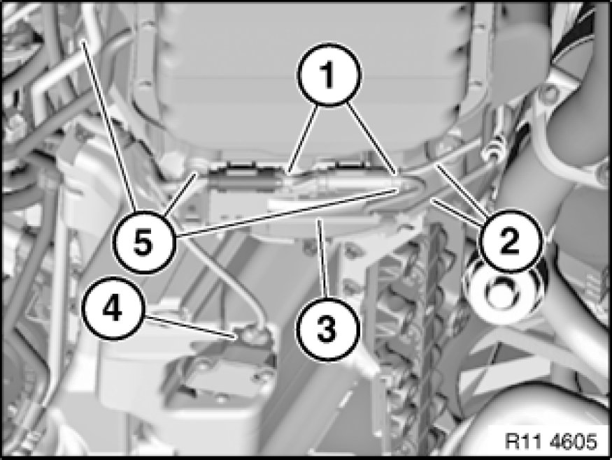
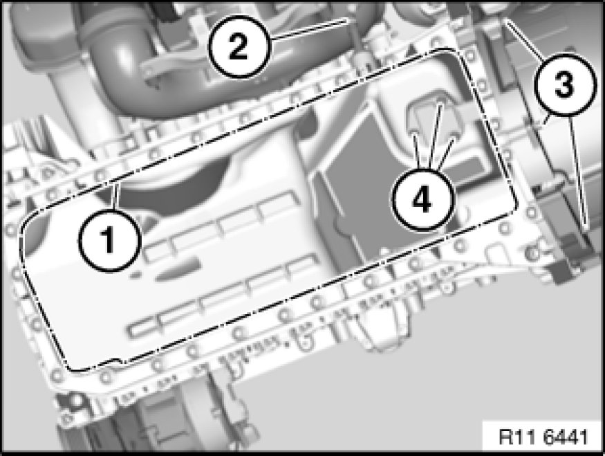

Oil Pan: Service and Repair
11 13 000 - Removing and installing, sealing or replacing oil sump (N52K)

Important!
When working on the engine oil, coolant or fuel circuit, you must protect the alternator against contamination.
Risk of damage!
Cover alternator with suitable materials.
Failure to comply with this procedure may result in an alternator malfunction.
Important!
Aluminium-magnesium materials.
No steel screws/bolts may be used due to the threat of electrochemical corrosion.
A magnesium crankcase requires aluminium screws/bolts exclusively.
Aluminium screws/bolts must be replaced each time they are released.
Aluminium screws/bolts are permitted with and without
colour coding (blue).
For reliable identification:
Aluminium screws/bolts are not magnetic.
Jointing torque and angle of rotation must be observed without fail (risk of damage).

Necessary preliminary tasks:
- Lower front axle
- Drain and add engine oil Engine Oil Service
Note:
The lines must be detached from the oil sump on vehicles with optional extra SA205 (automatic transmission); if necessary, detach oil pump and place to one side.

Unclip electric leads (2) of monitor sensors from holder (3).
Disconnect plug connections (1) of monitor sensors and lay to one side.
Release bolts (5) on transmission.
Tightening torque 11 13 7AZ [1][2]11 13 Oil Sump.
Lay holder (3) to one side.
Disconnect plug connection (4) on oil level sensor.

Detach return hose (2).
Important!
For vehicles with optional extra SA205 (automatic transmission), bolts of different lengths are installed for mounting the oil sump.
Observe different tightening torques.
Release bolts along line (1).
For vehicles with optional extra SA205 (automatic transmission):
Tightening torque 11 13 2 and 3AZ [1][2]11 13 Oil Sump.
For vehicles without optional extra SA205 (automatic transmission):
Tightening torque 11 13 5AZ [1][2]11 13 Oil Sump.
Installation Note:
Replace aluminium screws.
If necessary, release nuts (4). Remove oil level sensor.
Tightening torque 11 13 11AZ [1][2]11 13 Oil Sump.
Installation Note:
Replace sealing ring.
Important!
There must be no adhesive residues in the lower crankcase retaining threads.
Clean retaining threads and sealing faces.
Installation Note:
Replace all seals.

Assemble engine.